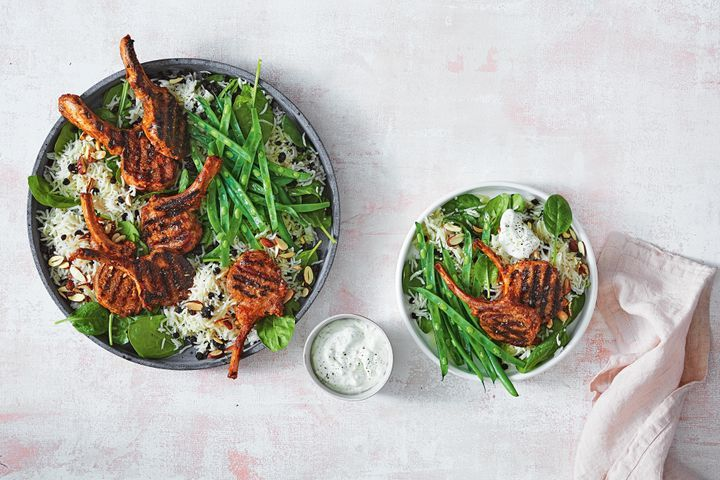

BBQ Tandori Lamb Cutlets

Fire up the BBQ!
Fire up the BBQ for these spicy, juicy barbecued tandoori lamb cutlets, served with coconut rice, it can be made in just 10 minutes
Ingredients
- 2 tbsp gluten-free tandoori paste
- 1 tbsp olive oil
- 8 French-trimmed lamb cutlets
- 200g green beans
- 2 x 250g pkt Tilda Microwave Coconut Steamed Basmati Rice
- 50g (1/2 cup) natural sliced almonds
- 80g (1/2 cup) currants
- 100g baby spinach
- Tzatziki dip, to serve
Steps
- Put the kettle on. Preheat a barbecue grill or chargrill pan on medium-high.
- While the kettle boils and grill heats up, combine tandoori paste and oil in a large bowl. Add lamb and toss well to coat. Trim or shred beans and place in a heatproof bowl.
- Pour the boiling water over the beans and set aside to blanch. Grill the lamb for 2-3 minutes each side for medium or until cooked to your liking.
- Meanwhile, microwave the rice following packet directions. Transfer to a large bowl. Add the almonds and currants. Toss until well combined.
- Drain beans. Divide rice mixture, beans and spinach among serving plates. Top with lamb. Season and serve with a dollop of tzatziki.